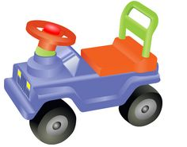
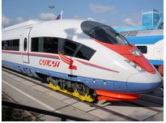
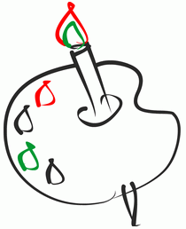

За рулем сижу довольный -
Ездить просто и легко!
Только руль чуть-чуть огромный
И педали далеко.

Мне купили паравозик,
Сразу два вагона возит.
Я включу его, и он
За собой везет вагон.
Вот бы мне в нем прокатиться,
Только жаль - не поместиться.
Нарисую я в альбоме
Голубое море,
Белый парус над волною
Бьется на просторе.

- Для общей картинки выбран формат PNG, так как это универсальный формат который подходит для всех типов изображений с минимальными потерями качества.
- Картинка с машинкой. Использовал формат PNG так как присутствует многоцветность, а так же возможность прозрачного фона.
- Картинка с поездом.Использовал формат JPEG так как он меньше весит и не сильно теряет в качестве.
- Картинка c красками.Использовал формат gif так как присутствует мало цветов.
- Вопрос по последней картинке, если использовать формат PNG то качество не теряется, а картинка весит меньше.